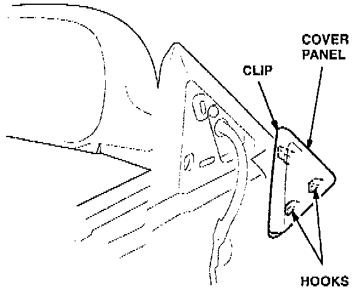
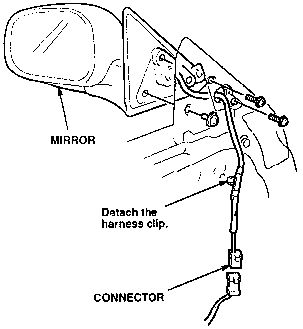
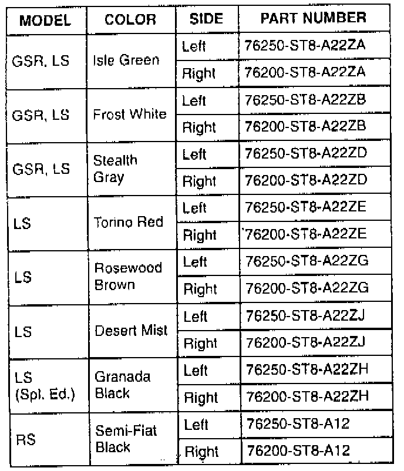

Outside Mirror - Vibrations
DATE: May 2, 1995YEAR: 1994-95
MODEL: INTEGRA 4-D00R
VIN APPLICATION: See VEHICLES AFFECTED
BULLETIN NO.: 95-009
SUBJECT: Outside Mirror Vibrates
PROBLEM: The outside mirror vibrates excessively.
VEHICLES AFFECTED
RS, LS:
1994 - All
1995 - Thru VIN JH4DB7. . .SS006568
GSR:
1994 - All
1995 - Thru VIN JH4DB8. . .SS001822
CORRECTIVE ACTION
Replace the outside mirror with the new assembly listed under PARTS INFORMATION.
1. Remove the inner door handle, armrest pocket, and door panel. Refer to section 20 of the service manual.
2. Disconnect the electrical connector for the mirror.
3. Use a small flat tip screwdriver to remove the mirror inner cover panel. Wrap the tip of the screwdriver with tape so you do not scratch the cover panel.

4. Disconnect the harness clip from the inner door panel. Remove the mounting screws, and remove the mirror.

5. Install the new mirror with the existing mounting screws.
6. Clip the harness to the inner door panel, and connect the electrical connector.
7. Reinstall the inner cover panel, door panel, armrest pocket, and inner door handle.
8. Test the mirror's operation.
PARTS INFORMATION

Outside mirror
WARRANTY CLAIM INFORMATION
In warranty: The normal warranty applies.
Out of warranty: Any repair performed after warranty expiration may be eligible for goodwill consideration by the District Technical Manager or your Zone Office. You must request consideration, and get a decision, before starting work.
Operation number: 820100 - replace one mirror
A - replace both mirrors
Flat rate time: 0.3 hour per side
Failed P/N: Use the P/N of the new mirror, with the last number changed from a 2 to a 1. For example, if the new mirror's P/N is 76250-STB-A22ZE, the failed P/N is 76250-ST8-A21ZE.
Defect code: 045
Contention code: B02